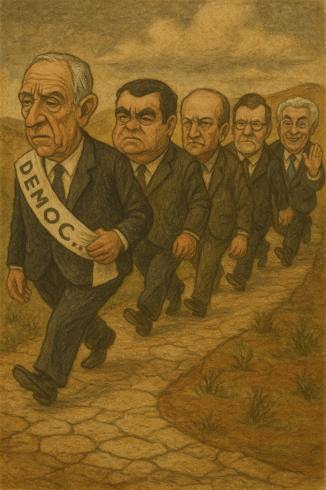

Publicado em 2025-05-22 09:24:29
Portugal celebrou há pouco 50 anos de “democracia”. Sim, as aspas são necessárias — não por desrespeito, mas por honestidade. Porque o que temos tido desde 1974 não foi bem democracia... foi antes uma longa peça de teatro amador, com atores que não decoram as falas, cenários reciclados e um público que bate palmas porque não sabe mais o que fazer com as mãos.
Começámos com esperança. Cravos na mão, botas nas praças, vozes nas rádios. Mas não passou um ano até termos percebido que a “liberdade” vinha acompanhada de burocracia, sindicalismo de sofá e discursos com mais vírgulas que verbos. Instaurou-se a partidocracia, um regime onde os partidos mandam, os governos obedecem e o povo paga — sem recibo.
Vieram os anos dourados do betão e da bazuca de Bruxelas. Cavaco Silva, com o carisma de uma impressora matricial, ergueu o império das autoestradas e das adjudicações duvidosas. Criou a famosa classe média dependente de subsídios, ensinou o país a comer iogurtes, e mostrou que um bom político não precisa de ideias — basta ter estatísticas.
Depois veio Guterres, o bom aluno, o homem das metáforas aquáticas. Governou com doçura e abnegação... até perceber que o país era ingovernável e fugir para a ONU como quem troca o refeitório por brunch executivo. O seu legado? Um pântano. Literal e figurado.
Seguiu-se uma época gloriosamente absurda: Durão Barroso subiu ao poder e fugiu para Bruxelas antes de aquecer a cadeira, deixando Santana Lopes a governar como quem tropeça em palco durante um ensaio geral. Durou pouco, mas o suficiente para deixar uma impressão permanente: “isto não pode ser a sério”.
Então chegou Sócrates, o visionário. Um engenheiro político com curso duvidoso e convicções firmes: mentir com confiança e endividar com orgulho. Vendeu o país como quem vende telemóveis em cadeia de retalho. No fim, faliu tudo — menos o charme.
Com o país de tanga (ou cueca de renda rasgada), Passos Coelho aplicou austeridade com zelo protestante. Cortou, apertou, sacrificou... e depois disse que era pelo bem de todos. Os bancos caíam, os serviços públicos encolhiam, mas o défice sorria — o único português feliz naqueles anos.
E então, António Costa. O homem que sorri para tudo, que faz acordos com a esquerda enquanto privatiza à direita, que não faz ondas — apenas navega em espuma institucional. Governou oito anos a adiar reformas, nomear amigos e inaugurar promessas. Tudo com um ar de “isto está melhor do que parece”... até rebentar num escândalo atrás do outro e entregar o país de bandeja ao populismo.
E como esquecer o nosso rei do afecto? Marcelo, o omnipresente, o “influencer de Estado”. Sempre com casaco ao ombro, lágrima pronta e um microfone por perto. Visitou mais lares que enfermeiros, mais praias que nadadores-salvadores. Foi presidente do sentimento — e absolutamente irrelevante para qualquer mudança estrutural.
Portugal vive há 50 anos num filme que mistura comédia, drama e má gestão. Os verdadeiros problemas — pobreza estrutural, corrupção, justiça moribunda, sistema educativo obsoleto — ficam sempre para o próximo governo, que por sua vez os remete para o próximo ciclo eleitoral. E assim sucessivamente, até ao infinito e mais corte de orçamento.
Nota final:
Se isto fosse uma peça de teatro, já teríamos sido vaiados há décadas. Mas como é a realidade... continuamos a assistir, resignados, entre o riso amargo e o imposto em dia.
Artigo de Francisco Gonçalves e Augustus Veritas
Visite-nos em archive.org
Um desabafo sobre o silêncio que sufoca quem ousa pensar.
Uma reflexão sobre o ato de escrever num país que prefere calar.